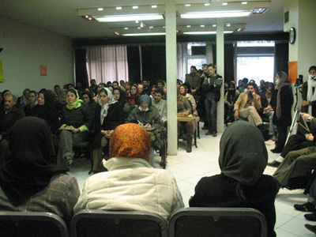
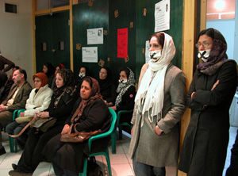

پذيرش > تریبون > گزارش كمپين > نوشتن از قوانین تبعیض آمیز" تشویش اذهان عمومی" نیست/آیدا سعادت، مریم (...)
 گزارشی از نشست اعتراض آمیز در انجمن صنفی روزنامه نگاران گزارشی از نشست اعتراض آمیز در انجمن صنفی روزنامه نگاران

 نوشتن از قوانین تبعیض آمیز" تشویش اذهان عمومی" نیست/آیدا سعادت، مریم مالک نوشتن از قوانین تبعیض آمیز" تشویش اذهان عمومی" نیست/آیدا سعادت، مریم مالک
24 آذر 1386 - - نسخه قابل چاپ
انجمن صنفی روزنامه نگاران روز پنچ شنبه 22 آذرماه، میزبان جمع کثیری از نمایندگان مطبوعات و نشریات اعضای کمپین یک میلیون امضا و نیز روزنامه نگاران و فعالان اجتماعی فرهنگی و سیاسی بود که در اعتراض به بازداشت مریم حسین خواه و جلوه جواهری گرد هم آمده بودند. یک ماه از بازداشت مریم و دو هفته از بازداشت جلوه می گذرد.

این نشست به درخواست تعدادی از روزنامه نگاران عضو انجمن صنفی که به تهدید امنیت شغلی روزنامه نگاران و نیز برخوردهای امنیتی و قضایی با فعالان زن اعتراض داشتند برگزار شد. به رغم این که نشست مذکور در دفاع از حقوق مطبوعاتی این دو روزنامه نگار و وب نگار برگزار شده بود، حضور جمع کثیری از طیف های مختلف مطبوعاتی، اجتماعی، فرهنگی، سیاسی، دانشجویی و حقوق بشری وکلای روزنامه نگاران و فعالان جنبش زنان و نیز خانواده های مریم حسین خواه و جلوه جواهری این برنامه را به یکی از پرشور ترین نشست های اخیر انجمن صنفی روزنامه نگاران تبدیل کرده بود.
دیوارهای سالن اجتماعات انجمن صنفی روزنامه نگاران با پوسترهایی از مریم حسین خواه و جلوه جواهری و مریم نوربخش روزنامه نگار متوفی و نیز شعارهایی در اعتراض به ادامه بازداشت این دو نفر پوشانده شده بود. "جرم روزنامه نگاران زن چیست؟"،" تشویش اذهان عمومی یا تنویر افکار عمومی؟!"، "سانسور کلمات کافی نبود؟ دست به "حذف" حق طلبان می زنند." ، نوشتن از قوانین تبعیض آمیز" تشویش اذهان عمومی" نیست از جمله شعارهایی بودند که بر دیوارهای انجمن صنفی روزنامه نگاران به چشم می خوردند.
ابتکار جالب کمیته ی هنری کمپین یک میلیون امضا، ماسک هایی با علامت ضربدر سیاه در اعتراض به ادامه بازداشت دوستانشان بود که توجه شرکت کنندگان در مراسم را به خود جلب کرده بود. به طوری که تعدادی از شرکت کنندگان نیز به تبعیت از آنان این ماسک ها را بر چهره زدند. تعداد حاضرین در برنامه لحظه به لحظه بیشتر می شد تا جایی که به غیر از فضای داخل سالن اجتماعات راهروهای سالن اجتماعات نیز مملو از کسانی بود که مشتاقانه به این نشست آمده و تا پایان برنامه همراهی کردند. آنچه در پی می آید گزارشی از برخی سخنرانی های این مراسم است .
گوهر بیات: جلوه و مریم برای کودکان کار و حقوق اجتماعی دخترانمان زحمت کشیدند
شهاب میرزایی همسر مریم حسین خواه، گوهر بیات مادر جلوه جواهری کاوه مظفری همسر او نیز در این مراسم طی سخنانی به ادامه ی روند بازداشت غیر قانونی مریم حسین خواه و جلوه جواهری اعتراض نمودند. شهاب میرزایی همسر مریم حسین خواه با تاکید بر این نکته که تمامی شرکت کنندگان در این برنامه از آخرین وضعیت مریم حسین خواه در زندان مطلع هستند قطعه شعری را از طرف یکی از دوستان مریم حسین خواه برای حضار خواند.
گوهر بیات مادر جلوه جواهری نیز در خصوص بازداشت دخترش و مریم حسین خواه گفت: "مریم یک روزنامه نگار است و جلوه تحقیقاتش در مورد زنان است. هر دو فعال اجتماعی هستند، جوانانی که در زندان هستند. اینها برای حقوق زنان تلاش کردند. مگر اینطور نیست که از دامن زن مرد به معراج می آید من خودم که یک زنم می بینم هزاران مشکل وجود دارد و حقوق ما را هم رعایت نمی کنند پس چطور از ما می خواهند بچه هایمان را پرورش دهیم. جلوه و مریم برای کودکان کار زحمت کشیدند و برای حقوق اجتماعی دخترانمان زحمت کشیدند. باید از این جوانان پشتیبانی شود نه اینکه به زندانشان ببرند. "
کاوه مظفری: از شما می خواهم هیأت منصفه ی ما باشید
در ادامه این نشست كاوه مظفري همسر جلوه جواهري، حاضرین را مورد خطاب قرار داده و گفت: " از شما می خواهم هیأت منصفه ی ما باشید. شما بگویيد جلوه كدام امنيت را به خطر انداخته است. جلوه اي كه فقط به خاطر امنيت زنان اين مملكت تلاش كرده امنيت چه كساني را به خطر انداخته است. آيا امنيت ملي ما از امنيت زنان كشورمان جداست؟"
وی با اظهار ناخرسندی از عدم پاسخگویی و بلاتکلیفی موجود در رسیدگی به بازداشت همسرش ادامه داد: " این که نمی دانم حتا اسم قاضی چیست یا دادستان کیست و در آنجا چه خبر است مرا عصبانی کرده است. به این موارد اعتراض دارم اما اینجا نمی شود اعتراض کرد. تنها می توان دفاع کرد. "
وی سخنان خود را با یادآوری گفته های چندی پیش رئیس قوه ی قضائیه مبنی بر غیر شرعی بودن نگهداشتن متهمین در بازداشت افزود: " انگار براي بعضي ها اين طور هست و براي ما نه. ميخواهم از حقوق حداقلي دفاع كنم چون اينجا اصل بر مجرميت است و نه بر برائت ميخواهم بگویم كه جلوه چه كارهايي نكرده است. جلوه تا كنون تفنگ به دست نگرفته است. تا به حال براي تهديد كسي چاقو هم به دست نگرفته! جلوه تا کنون قصد بر اندازي نداشته، دزدي نكرده از ديوار بالا نرفته است. تا حالا از هيچ جاسوسي پول نگرفته است .. از امريكاي جهانخوار هم پولي نگرفته . هيچ كدام اين كارهاي عجيب غريب را انجام نداده .. اما جلوه نوشته است. با زنان اين مملكت حرف زده است براي اينكه براي آنان امنيت بياورد با ايشان حرف زده است. جلوه مقاله و گزارش نوشته، ترجمه كرده، جلوه تحقيق كرده است و گاهی هم برای زنان این مملکت گریه کرده است . نمي دانم چرا بايد دفاع كنم اما اينجا نمي شود تند تر از اينها حرف زد ، نمي شود در باره ي حقوق حرف زد. ممكن است بعضي ها فكر كنند ما مي خواهيم به ايشان حمله كنيم.. نه اينها يك سري حرفهاي حداقلي است. من مي خواهم از اين حقوق حد اقلي دفاع كنم . ميخواهم بگویم حق داريم زنده بمانيم و براي اين حقمان تلاش مي كنيم ، مبارزه مي كنيم و هزينه مي دهيم ."
مظفری سخنان خود را با سپاس از انجمن صنفي مطبوعات كه در اين بي مجالي فضايي داده است تا ما حرفهايمان را بزنيم به پایان برد.
سمیه فرید و سارا لقمانی از دوستان جلوه جواهری و مریم حسین خواه نیز در ادامه گزارش های این دو فعال حقوق زنان از زندان را برای حضار خواندند.
پروین بختیار نژاد : با بازداشت چند زن مشكلي از مشكلات عديده ي شما حل نخواهد شد
پروین بختیار نژاد فعال حقوق زنان و روزنامه نگار با ابراز تاسف از بازداشت مریم حسین خواه و جلوه جواهری اظهار داشت: "خواسته ي تغيير همواره از طرف آناني كه تغيير به وحشتشان مي اندازد با مقابله مواجه شده است. تغيير درهيچ حوزه اي را نمي توان به ياد آورد بدون اينكه ما را به ياد مخالفت ها بيندازد. و در مقابل پافشاري عده اي براي نگهداشتن وضع موجود تلاش فداكاري از خودگذشتگي عده اي همچون مريم حسين خواه و جلوه جواهري است كه راه را براي افق هاي روشن تر كه فقط با تغيير در وضع موجود اتفاق مي افتد باز مي كند."
او با تاکید بر تلاش یکصد ساله زنان برای تغییر قوانین به تجربه ی اعتراض زنان در صدر اسلام اشاره کرد : "انگار اين صدا اين اعتراض و اين تلاش پيگير تازه به گوش مردان رسيده است." وی ادامه داد : "اما شايد جالب باشد كه بدانيم نزديك به هزار و چهارصد سال پيش زماني كه پيام توحيد و عدالت محمد در سراسر مكه و مدينه پخش شد اولين اعتراض مدني توسط زنان مسلمان صورت گرفت آنان در اعتراض به حضرت محمد گفتند چرا در قران فقط از مردان ياد مي شود و از زنان ذكري به ميان نمي آيد كه وحي مي آيد بي گمان مردان و زنان مسلمان و مومن و فرمانبردار و درستكار و شكيبا و فروتن روزه دار و پاكدامن و مردان و زناني كه خدا را بسيار ياد مي كنند براي همه آنها پاداش بزرگ آماده ساخته شده... شكايت هاي متعدد كه هر يك حكايت از خشونت هاي خانگي داشت روانه ي خانه ي پيامبر مي شود و پيامبر جز دفاع از زنان كار ديگري نمي توانست بكند و نكرد."
محمد شریف : چرا به تعهدات حقوق بشر عمل نمی کنید؟
سخنران بعدی نشست انجمن صنفی روزنامه نگاران، محمد شریف استاد دانشگاه علامه طباطبایی، وکیل و حقوقدان بود . شریف ضمن تاکید بر این که فعالان اجتماعی در برداشت از حقوق بشر بیشترین هزینه ها را می پردازند گفت: "معاهده عبارت است از سندی که کشورها به آن می پیوندند و برای کشورها لازم الاجراست. ما همواره از دولت می خواهیم به موازین حقوق بشر عمل کند به عبارت دیگر دولت را مخاطب قرار می دهیم که چرا به تعهدات حقوق بشر عمل نمی کنید؟
معاهده برای دولتها حق ایجاد می کند و در کنار حق" تکلیف" ایجاد می کند. معاهدات حقوق بشر تکلیف محض است، دولتها متهم اصلی در حقوق بشر هستند این نکته بسیار بسیار مهم است که ما بدانیم دولت ها متهم اصلی نقض حقوق بشرند و ما نمی توانیم با متهم اصلی حقوق بشر به گونه ای صحبت کنیم که یک طرف قرارداد و در مقابل ما ایستاده. گاهی دولت توان حمایت از حقوق بشر و شهروندی را ندارد مانند دولت بوسنی و هرزگوین در برابر سربهاو یا افغانستان در برابر طالبان. گاهی در بلایای طبیعی تواناییش را ندارند مثل سیل و زلزله، منتها اینها استثناء است. دولت هایی که حقوق بشر را نقض می کنند متهم هستند نه این استثناها. بنابراین این عبارات و الفاظ و اسناد را که ما می خوانیم اینها روی کاغذ است تا چیزی که وجود دارد در جامعه است نه در کاغذ. ما گویی دچار یک توهم شدیم، ما باید در نظر داشته باشیم که آنچ وجود دارد در خود جامعه است نه روی کاغذ. این عبارات میثاق ها را از کاغذ بیرون آوردن شوخی محض نیست . چیزی را که ما می بینیم اینهاست (اشاره به عکس مریم و جلوه) در زندانها است و شوخی نیست. کشورها به عنوان متهم اصلی نقض حقوق بشر با این اسناد چطور برخورد می کنند؟ دولتها این اسناد را می پذیرند و باید تعهد به اجرا داشته باشند. "
وی در پایان سخنان خود اظهار داشت: "نکته بارز دیگری که جایگاه دولتهای سرکوبگر راباز می کند کمیسیون حقوق بشر است. خدا بیامرز بود، که جایش را داد به شورای حقوق بشر. چرا کمیسیون حقوق بشر به این سرنوشت فاجعه بار مواجه شد؟ و شورای حقوق بشر علی الظاهر همانهایی را انجام می دهد که کمیسیون انجام می داد.اندیشیدن به این واقعیت برای ما کافی است که جایگاه خودمان را در برابر واژه های فریبنده در اسناد حقوق بشر مشخص کنیم."
نسرین ستوده: وثيقه بايد با نوع جرم، شخصيت متهم و یا امکان متواری شدن وی تناسب داشته باشد
در این برنامه زهره ارزنی و کیل جلوه جواهری که از گردانندگان برنامه نیز بود با اشاره به وضعیت حقوقی پرونده ی موکل خود اظهار داشت هنوز اجازه ی مطالعه ی پرونده را به او نداده اند. وی سپس از همکار خود نسرین ستوده دعوت کرد که در باره ی روند وضعیت حقوقی مریم که مشابه با جلوه است صحبت کند.
ستوده با ارائه ی توضیحاتی در خصوص روند حقوقی پرونده ی موکل خود اظهار داشت در تمامی پرونده های برخورد با فعالان حوزه های مختلف یک روند غیرقانونی مشترک وجود دارد:" وثيقه بايد با نوع جرم شخصيت متهم و نیز با امکان متواری شدن شخص متهم تناسب داشه باشد . در برخوردهای غير قانوني كه با اینگونه افراد می شود، براي آنان وثيقه هاي سنگين صادر مي شود. رقم سنگين وثیقه های صادر شده نه با شخصيت متهمان تناسب دارد و نه با نوع جرمشان. در پرونده اي كه خود من وكيل هستم در يك تجاوز خانگي كه منجر به تولد فرزند نامشروع شده بود دادگاه كيفري استان مبادرت به صدور يك ميليون قرار وثيقه مي كند بنا بر اين اين دوستان ما كه به نام متهم در دادگاه حضور پيدا مي كنند جرائمي خيلي سنگين تر از يك قتل عمد مرتكب مي شوند كه وثيقه هاي حداقل صد ميليوني براي آنها صادر مي شود و گاهی وثیقه های هشتصد ميليوني هم داشته ايم ."
ستوده با اشاره بر تاکید قانون بر لزوم در دست بودن مدارک کافی برای بازداشت متهمان گفت در شیوه های برخورد غیر قانونی با این فعالان ابتدا اتهامی را برای افراد در نظر می گیرند و آنان را بازداشت کرده و در قرنطینه قرار میدهند به گونه ای که هیچ کس اعم از خانواده و وکلای آنان قادر به ملاقات با آنها نباشند و پس از آن طی تحقیقات دست به جمع آوری مدارک می زنند. در يك مورد، پرونده ي آقايي كه از فعالان جنبش زنان هستند و به اين اتهام بازداشت شده اند، داديار درخواست جمع آوري مدارك را داده و دستور داده است كه متهم را به طور نامحسوس تحت نظر قرار دهند و اگر موارد اخلاقي سوء مشاهده شد گزارش بدهند. چطور است كه كسي را به اتهام مشاركت در جنبش اجتماعي مي گيرند و بعد قرار است موارد سوء اخلاقي به شما گزارش شوند. اصلا موارد سوءاخلاقي قرار است در دادگاه انقلاب بررسي شوند. توجه داشته باشید که قانون آيين دادرسي كيفري ما صراحتا قضات دادگاهها را از اقدام به جمع آوری مدارک در مسائل اخلاقی كه حالا قانون ما به عنوان جرائم منافي عفت ازشان ياد كرده است ، جز در مواردی که شاکی خصوصی وجود داشته باشد، منع كرده است. این اقدامات چه پيغامي را مي رساند؟ فلسفه ي مجازات آن چيزي است كه به نظر اقدام كنندگان بازدارنده است ."
شهلا لاهيجي :مريم حسين خواه حتا در زندان به فکر تجهیز كتابخانه زنان زنداني است
شهلا لاهيجي سخنران بعدی مراسم گفته های خود را این گونه آغاز کرد:
"زمانی كه در كوچه هاي انقلاب مي دويديم آرزويمان اين بود كه آنچه بر جامعه مستولي ميشود چيزي فراتر برتر بيشتر بهتر انساني باشد از آنچه كه در دسترس داشتيم. آيا امروز بايد بگرييم براي اينكه آنچه را هم داشتيم از دست داديم؟ جرم دوستان ما که زندانی هستند چیست؟ چه گفتند جز انتقاد از قوانيني كه بايد منسوخ شود؟ زمانه پوياست و به پيش مي رود. قوانين صد سال پيش امروز كاربرد ندارد همانطور كه زندگي ما زندگي صد سال پيش نيست. اين ساده ترين، طبيعي ترين، كوچكترين و حداقل خواسته هاي جامعه است . خواسته هاي زنان و مردان. نه تنها تعداد مرداني كه در اينجا حاضر هستند بيانگر اين واقعيت هست بلكه زندگي اين را به ما مي گويد. اگر يك دست همسر است دست ديگر دختري هست كه اگر بر او ظلمي شود جانمان بيشتر مي سوزد. آيا بايد با كسي كه ساده ترين شكل را براي بيان خواسته هاش انتخاب كرده چنین برخوردی شود؟ این ها گفته اند مردم مي خواهيد قانون عوض شود تا ما خواسته هاي شما را با قانونگذار در ميان بگذاريم . تصور بكنيد اگر بناست اذهان عمومي ما اينچنين مشوش شود مرگ بر ما! اگر بنا ست كه ذهن ما آنقدر ترسان باشد كه حتي نظر ديگران را نخواهد بشنود بگذاريد به شهر مردگان به شهر خاموشي بپيونديم. نه!
بايد اين واقعيت را بفهمند كه ديگر اين دوران قابل دوام نيست. تا كي مي شود كه دوستان ما به صورت سمبليك بر دهانشان چسب بزنند و بگويند ديگر حرفي نمي زنيم؟ من به كساني كه تصور می کنند با چنين روشي مي شود جامعه را به سكوت واداشت اعلام ميكنم بترسيد از جامعه كه از حرف ساكن بماند. ياد مي كنيم از دوستان عزيزمان مريم حسين خواه از جلوه ي جواهري. مريم حسين خواه حتا در زندان هم به فكر كتاب بود اولين كاري كه كرد گفت بگذاريد اين كتابخانه براي زنان زنداني درست كنيم. "

آسيه اميني : مدافعان حقوق زنان امروز در زمره ي قربانيان حقوق زنان قرار گرفته اند
آسيه اميني روزنامه نگار و فعال زنان وحقوق بشر نیز سخنان خود را با سپاس از انجمن صنفی روزنامه نگاران شروع کرد و گفت این انجمن تنها نهاد صنفی است که امروز می توان امیدوار بود دست کم سالنکی برای جمع شدن ما دارد تا هر ازگاهی یاد دوستان در بندمان را در اینجا گرامی بداریم.
امینی گفته های خود را چنین ادامه داد:
"امروز، دقيقا روزي كه گردهم آمده ایم تا در مورد مريم حسين خواه و دوست عزيز ديگرمان جلوه جواهري صحبت كنيم، سالروز روزي است كه چهار سال پيش 13 دسامبر 2003 ، سران كشورهاي جهان در سوئيس گرد هم آمدند تا با هم پيمان نامه اي را براي گسترش جامعه ي اطلاعاتي در جهان امروز امضا كنند."
او ضمن خواندن بندهای اول، چهارم و دوازدهم این پیمان نامه و نیز ماده 19 اعلامیه جهانی حقوق بشر اظهار داشت:
"امروز هيچ نهاد صنفي نه از فعالان مدني و نه از فعالان اجتماعي حمايت نمي كند و متاسفانه در شرايطي به سر مي بريم كه فعالان صنفي و مدني حقوق اجتماعي و مدافعان حقوق بشر خود در زمره ي قربانيان حقوق بشر قرار گرفته اند. مدافعان حقوق زنان امروز در زمره ي قربانيان حقوق زنان قرار گرفته اند از همه كساني كه خودشان را مدافع حقوق زنان و حقوق بشر مي دانند دعوت مي كنم به اين كه براي داشتن يك نهاد صنفي مستقل از هر گونه دخالت نهادهاي دولتي كه استقلال حرفهاي ما را خدشه دار مي كنند گام بردارند كه در واقع شايد نبودن اسم جلوه جواهري در كنار اسم مريم حسين خواه در دعوت نامه هايي كه براي حضور تك تك شما ارسال شده دليلي براي اين حرف من است. "
این روزنامه نگار و فعال حقوق بشر ادامه داد:
"كشور ما امضا كننده ي اين بيانيه است. ما متعهديم ضامن اين باشيم كه جامعه اطلاعاتي به زنان قوت ببخشد و مشاركت كامل آنان رابه طور برابر در همه عرصه هاي اجتماعي و حاكم تبديل كند و از فناوري هاي اطلاعاتي و ارتباطي براي اين هدف بهره بگيرد. شما را دعوت مي كنم به اين كه عادلانه قضاوت كنيد. آيا آنچه كه امروز بر ما مي رود پاسخ مناسبي به امضا ي اين تعهد بين المللي است؟ آيا ما نبايد پاسخگويان به اين تعهد بين المللي را دعوت كنيم كه توضيح مناسبي به ما و ساير همپيمانان خود بدهند. به اين كه آيا دو زن كه كاري به جز تعهدي كه كشور ما و دولت ما به دنيا داده انجام نداده اند بايد امروز در زندان باشند و فردا معلوم نيست كدام يك از مدافعان حقوق زنان و مدافعان حقوق بشر؟"
ژیلا بنی یعقوب : مریم و جلوه سمبل اعتدال هستند، هم در مطالبات و هم در فعالیت اجتماعی
سخنران بعدی نشست انجمن صنفی روزنامه نگاران که در اعتراض به بازداشت مریم حسین خواه و جلوه جواهری برگزار شد، ژیلا بنی یعقوب روزنامه نگار، فعال زنان و مسئول سایت کانون زنان ایرانی بود که صحبت های خود را اینچنین آغاز کرد:
"می خواهم از مریم و جلوه و مریم بگویم. هر سه زن، هر سه روزنامه نگار، هر سه از طبقه متوسط با درآمد متوسط شاید رو به پایین. از مریم نوربخش شروع می کنم که از میان ما رفت، روزنامه نگار اجتماعی حوزه زنان، با شور زیاد اغلب برنامه های جنبش های مدنی بویژه زنان و دانشجویان حضور پیدا می کرد. روزنامه نگار حق التحریری با حقوقی اندک که حتی برای پرداخت کرایه تاکسی اش کافی نبود. چند هفته پیش بود که با او صحبت می کردم، می دانستم که پس از ده سال هنوز در هیچ روزنامه ای استخدام رسمی نیست و هیچ بیمه ای ندارد پرسیدم چقدر درآمد داری؟ با همان معصومیت همیشگی اش گفت بد نیست. در آخرین نشریه ای که کار می کردم ماهانه بین 30 تا 50 هزار تومان می گرفتم اما خب همان هم تعطیل شد."
بنی یعقوب ادامه داد:
"به یاد می اورم در هشت مارس به هنگام تهیه گزارش از نیروهای لباس شخصی آنچنان او را کتک زدند که تا یک هفته از درد نمی توانست که بخوابد. بارها از خودم پرسیده ام مامورانی که او را می زدند، می دانستند که خبرنگاری را در حال انجام وظیفه کتک می زنند که درآمدش به زحمت در ماه 50 هزار تومان است.
و این روزها از خودم می پرسم آن کسانی که برای مریم حسین خواه و جلوه وثیقه های یکصد میلیونی تعیین کرده اند واقعا می دانند که درآمد مریم به عنوان روزنامه نگار و جلوه به عنوان وب نگار چقدر است؟ یا همچون پزشک بهداری بند 209 اوین که می گفت من مطمئن هستم که هم روزنامه نگاران که در روزنامه های اصلاح طلب و غیر دولتی کار می کنند از خارج دلار می گیرند و هر چه من توضیح می دادم قبول نمی کردند می گفت مدارکش را کیهان چاپ کرده است!
بنی یعقوب سخنان خود را با ذکر این نکته که مریم و جلوه هم در مطالبشان و هم در فعالیت های اجتماعی شان. سمبل اعتدال هستند، ادامه داد:
" اگر افراد معتدلی همچون مریم و جلوه هم حق فعالیت در این کشور ندارند پس چه کسانی دارند. سیستم امنیتی و قضایی با زندانی کردن فعالان معتدل چه پیامی می خواهد بدهد؟! چه نتیجه ای می خواهد بگیرد؟! آیا هر جور شد می خواهند فعالان اجتماعی را به سمت رادیکال شدن بیشتر ببرند تا بهانه لازم را برای سرکوب درست داشت باشند؟ اما خوشبختانه عملکرد فعالان جنبش زنان در یکسال گذشته نشان داده که آنها واکنش رفتاری نمی کنند و در برابر رفتارهای تند بخشی از سیستم، رادیکال نخواهند شد و به حرکتهای مدنی خود ادامه خواهند داد."
بهاره هدايت دبير كميسيون زنان دفتر تحكيم وحدت : یادی از بازداشت شدگان
بهاره هدايت دبير كميسيون زنان دفتر تحكيم وحدت به رغم انکه بیمار بود حاضر به بیان سخنان کوتاهی درباره دربندیان شد. :«نامي مي برم از دانشجويان و دختران دانشجوياني كه درحال حاضر در بازداشت به سر مي برند خانم سپيده پورآقايي، نسيم سلطان بيگي، انوشه آزاد فر و الناز جمشيدي و دختر كه شب گذشته خبر رسيده در مازندران بازداشت شده است.همچنین فعالان حقوق زنان،هانا عبدی و روناک صفازاده ، مریم حسین خواه و جلوه جواهری. دفتر تحكيم و حدت و كميسون زنان اين سازمان طي دو بيانيه جداگانه نسبت به بازداشت آنها و دانشجويان طيف چپ اعتراض كرده و من در اينجا تاكيد مي كنم با وجود مرز بندي هاي مشخص و خدشه ناپذيري كه با اين دانشجويان از نظر فكر و عملكردي داريم ولي نسبت به بازداشت اينها شديدا معترضيم قطعا آرمان هاي اصلي ما حقوق بشر و آزادي بيان است كه براي آن مبارزه مي كنيم و براي همه فعالين جامعه مدني اين حقوق را مي خواهيم و مطالبه مي كنيم » او در ادامه گفت:«بازداشت دانشجويان دختر نشان دهند ي اين است كه فعاليت هاي زنان در حوزه هاي مختلف اعم از كمپين يك ميليون امضا در زير مجموعه فعاليت هاي زنان و ذيل فعاليت هاي دانشجويي و مطبوعاتي به واسطه ي اين كه اين ها يك شاخه ي جديد از فعاليت ها را باز كرده اند تاثير گذارشده است و متاسفانه حاكميت به دليل تصلب ناشي از سياستهاي خود اجازه ي رشد و شكوفايي فعاليت ها ي جديد را نمي دهد» او همچنین گفت:« يادي هم ميكنم از دكتر زهرا بني يعقوب كه متاسفانه ظلم مضاعفي بر او و بر خانواده ياش رفت واحكامي كه صادر شده است وعدم پيگيري قضيه و ابهاماتي كه در اين ماجرا وجود داشته نمونه ونمادي است از وضعيت ظالمانه اي كه بر زنان ما می گذرد.»
او در ادامه با اشاره به فعالیت های مریم حسين خواه و جلوه جواهري گفت:« من به عنوان دبير كميسيون تحيكم وحدت فعالیت هایشان را ارج مي گذارم. با اين دو دوست عزيز آشنايي داشتم. صادقانه در فعاليت هایشان عمل مي كردند و تمام هم و غم آنها پيشبرد فرايند كمپين يك ميليون امضا بوده است و جادارد كه از اين طرح اجتماعي هم ياد بشه و تاثير گذار بودن و مثمر ثمر بودن كمپين يك ميليون امضا را از ياد نبريم و شايد يك بار براي هميشه بهتر باشه كه مسئولين قضايي و امنيتي مشكلات اصلي خودشان را با كمپين يك ميليون امضا به طور مشخص بيان بكنند تا شايد بشوداين قضايا را حل كرد .»
فرخنده احتسابیان: اگر داد اين است بيداد چيست
فرخنده احتسابیان از اعضای کمیته ی مادران کمپین یک میلیون امضاء و گروه مادران صلح ضمن محکوم کردن بازداشت مریم حسین خواه و جلوه جواهری بیانیه ی این گروه را برای حضار خواند در بخشی از این بیانیه آمده است که نمی توان به بهانه حفظ امنیت ملی، از دانشجویان، معلمان، روشنفکران، روزنامه نویسان، هنرمندان، کارگران، زنان و مردان و . . . و همه مردم صلح طلب و عدالتخواه با هر مذهب و قومیتی، خواست که سکوت کنند و در حرکت های صلح طلبان فعالیت نکنند و خواهان حق و حقوق خود نیز نباشند.
منصوره شجاعی فعال حقوق زنان ضمن اشاره به این که چرا این بار نوعروسان کمپین را نشانه گرفته اند از اقدامات و ابتکارات مریم حسین خواه و جلوه جواهری در تجهیز کتابخانه ی مخاطب مدار در زندان و نیز تاسیس صندوق یاری زنان زندانی و تلاش برای بهبود وضع زنان زندانی سخن گفت.
فریده غائب در خصوص شرایط مخاطره آمیز شغلی زنان روزنامه نگار و محبوبه حسین زاده نیز در خصوص فعالیت های مطبوعاتی در زمینه ی تغییر قوانین و طرح خواست های کمپین یک میلیون امضا در نوشته هایش سخن گفتند.
متن کامل سخنرانی این دوستان نیز منتشر خواهد شد.
این نشست با سخنان عیسی سحرخیز عضو انجمن حمایت از مطبوعات و رجبعلی مزروعی دبیر انجمن صنفی روزنامه نگاران پایان یافت .
گزارش تصویری از این نشست بزودی منتشر می شود.
گزارش های مرتبط:
جرم روزنامه نگاران زن چیست
دفاع از زنان در بند در انجمن صنفی روزنامه نگاران
اعتراض به بازداشت مریم حسین خواه و جلوه جواهری در انجمن صنفی روزنامه نگاران
گزارش تصویری کسوف
Iran Meeting to Protest Arrest of 2 Female Journalists
درخواست آزادي حسينخواه و جواهري
ارسال به
بالاترین
،
توییتر
،
فریندفید
،
فیسبوک
در همين بخش :
 دهمین دورۀ مراسم تندیس صدیقه دولت آبادی ۱۳۹۲ دهمین دورۀ مراسم تندیس صدیقه دولت آبادی ۱۳۹۲
کارت پستالهایی به بهانهی هشت مارس و به یاد همهی مبارزین راه برابری
بیانیه بیش از 350 تن از مدافعان حقوق زنان به مناسبت روز جهانی زن؛ زنان هر روز فرودستتر میشوند
لباسی که برای تن ما دوخته اند! /اعظم بهرامی
چالشها و چشمانداز فعالیت مدنی زنان
ديگر بخش ها :
طرح یک میلیون امضا
|
مقالات
|
سایت نوشته ها
|
اخبار
|
گزارش كمپين
|
گفت و گو
|
علیه سکوت
|
كوچه به كوچه
|
نامه های شما
|
گزارش ویژه
|
گفتگو با اعضا
|
ویژه سالگرد کمپین
|
تصویر برابری
|
دل آرام علی
|
تریبون
|
مقالات
|
تاریخ شفاهی
|
خارج از چارچوب
|
کتابخانه
|
درباره کمپین
|
کمپین در شهرها
|
کمپین در بند
|
صدای تغییر
|
ویژه 22 خرداد
|
لایحه حمایت از خانواده
|
گالری
|
عشا مومنی
|
امیر یعقوبعلی
|
خدیجه مقدم
|
راحله عسگری زاده و نسیم خسروی
|
پروین اردلان،جلوه جواهری، مریم حسین خواه، ناهید کشاورز
|
زینب پیغمبرزاده
|
سعیده امین، سارا ایمانیان، محبوبه حسین زاده، ناهید کشاورز و همایون نامی
|
احترام شادفر
|
نسیم سرابندی زاده،فاطمه دهدشتی
|
وبلاگ مهمان
|
پرونده خرم آباد
|
دستگیری ها
|
مریم مالک
|
پرستو اللهیاری
|
مهرنوش اعتمادی
|
سمیه رشیدی
|
Other Languages
|
همراهان
|
«فراخوان کمپین ده روز با بهاره هدایت»
| English
|